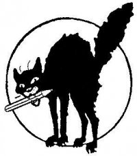

Submitted on Thu, 05/05/2011 - 5:52pm
By Marc Norton - May 5, 2011
First published inBeyond Chron - http://www.beyondchron.org/news.php?itemid=9153
For photos, see Indybay - http://www.indybay.org/newsitems/2011/05/05/18678943.php
A non-traditional alliance of workers in Portland and Seattle organized a Day of Solidarity with Hotel Frank Workers last Friday, April 29. The Portland Industrial Workers of the World (IWW), the Seattle Solidarity Network, and Hotel Frank workers were all on the streets picketing Provenance hotels. Provenance is the hotel management company that threw the UNITE HERE Local 2 contract at Hotel Frank in the trash almost a year ago.
In Portland, the IWW picketed Hotel Lucia. Provenance has its headquarters in Portland, as well as two upper-crust boutique hotels, Hotel Lucia and Hotel deLuxe. The IWW has a long history as a militant and radical labor union, often credited with popularizing the slogan and philosophy that “An Injury to One is An Injury to All.” That was certainly the spirit in evidence when they set up their picket line last Friday. You can see a short video of the action here.
In Seattle, the Seattle Solidarity Network picketed Hotel Max, another high-end Provenance boutique hotel. SeaSol, founded in 2008, is a much younger organization than the IWW, but has already established a reputation for organizing successful campaigns for workers and tenants’ rights. They can mobilize an impressive number of people, and did just that on Friday.
And in San Francisco, Hotel Frank workers held our regular Friday afternoon picket. Hotel Frank workers declared a boycott of the hotel last September. Since then we have staged an escalating series of actions aimed at restoring our Union contract, including active picket lines and unannounced delegations to management.
Submitted on Thu, 05/05/2011 - 5:52pm
By Marc Norton - May 5, 2011
First published inBeyond Chron - http://www.beyondchron.org/news.php?itemid=9153
For photos, see Indybay - http://www.indybay.org/newsitems/2011/05/05/18678943.php
A non-traditional alliance of workers in Portland and Seattle organized a Day of Solidarity with Hotel Frank Workers last Friday, April 29. The Portland Industrial Workers of the World (IWW), the Seattle Solidarity Network, and Hotel Frank workers were all on the streets picketing Provenance hotels. Provenance is the hotel management company that threw the UNITE HERE Local 2 contract at Hotel Frank in the trash almost a year ago.
In Portland, the IWW picketed Hotel Lucia. Provenance has its headquarters in Portland, as well as two upper-crust boutique hotels, Hotel Lucia and Hotel deLuxe. The IWW has a long history as a militant and radical labor union, often credited with popularizing the slogan and philosophy that “An Injury to One is An Injury to All.” That was certainly the spirit in evidence when they set up their picket line last Friday. You can see a short video of the action here.
In Seattle, the Seattle Solidarity Network picketed Hotel Max, another high-end Provenance boutique hotel. SeaSol, founded in 2008, is a much younger organization than the IWW, but has already established a reputation for organizing successful campaigns for workers and tenants’ rights. They can mobilize an impressive number of people, and did just that on Friday.
And in San Francisco, Hotel Frank workers held our regular Friday afternoon picket. Hotel Frank workers declared a boycott of the hotel last September. Since then we have staged an escalating series of actions aimed at restoring our Union contract, including active picket lines and unannounced delegations to management.
Submitted on Thu, 05/05/2011 - 5:37pm
 Headlines:
Headlines:
- Six Jimmy John’s Workers Fired For Whistleblowing
- Fired Union Barista Achieves Victory In Brooklyn
- ILWU Local 10 Shuts Down Oakland Port
Features:
- The Evolution of May Day Worldwide
- Wobbly Arts: The Art of the IWW Protest Song
- Key figures from the IWW in South Africa
Download a Free PDF of this issue.
Submitted on Thu, 05/05/2011 - 3:04pm
Grad Union Reformers Call on UAW 2865 to Count Every Vote in Union Leadership Election
--Cheryl Deutsch, UC Irvine, Candidate for President --Charlie Eaton, UC Berkeley, Candidate for Financial Secretary, 510-220-1520
The UAW 2865 internal union Elections Committee has been conducting a vote count since Friday, April 29th for a contentious election for the Local's top elected leadership. As the count proceeded, it appeared possible that a slate of reformers, Academic Workers for a Democratic Union (www.awdu.org) would win the election. Then, at 8 pm Saturday, April 30, the incumbent- controlled Election Committee abruptly decided to terminate the vote count, leaving 1500 ballots uncounted -- nearly half the ballots cast.
In a blatant effort to hold on to the power and privileges of their high paying positions, paid union official Daraka Larimore-Hall and his incumbent slate have tried to spin this egregious violation of UAW election procedures. Many of the incumbent candidates are not graduate students, including three of the incumbent candidates for top officer positions. With the vote count, together these candidates stand to lose the hundreds of thousands of dollars in income and benefits they give themselves annually with graduate students’ dues dollars.
Cheryl Deutsch, AWDU candidate for President, said, “We won't know if AWDU won the election until all the votes are counted, but it's hard to understand why else the current union administration would abandon the vote count without having counted nearly half the ballots cast in the election.”
All but three of the Elections Committee members abandoned all of the election materials in the union's LA conference room, including boxes of more than 1500 uncounted ballots from UCLA and Berkeley union members.
A group of more than 20 UAW 2865 member reformers and three Elections Committee members still present left all materials in the conference room exactly as they were when the Elections Committee abandoned the vote count. The group then locked the conference room to preserve the integrity of the ballots, after photographing and videotaping the room and its contents in detail. UAW 2865 members remain at the LA office to monitor the ballots and ensure they are not tampered with until they can be counted.
AWDU has demanded that our UAW 2865 Elections Committee count every vote and have called on Mr. Larimore Hall and all candidates on his slate to join us in our demand.
Submitted on Thu, 04/28/2011 - 8:02pm
By FW John O’Reilly
On Saturday April 16, IWW members and friends enjoyed a day of free educational talks in the new union office in South Minneapolis. The event was organized by the Work People’s College, a committee of the IWW branch, and promoted ideas and conversations about different important themes that working people are facing today. Over 60 people attended the talks through the course of the day, and many members took away important lessons and invaluable conversations.
Class topics included an update and discussion about the current struggles faced by pro-democracy movements in the Middle East and Northern Africa, a panel featuring organizers working in the low-wage sector and a talk about the importance of the strike as a tactic for workers. Members of the Madison IWW branch came to help lead reflections about the movement for a general strike in Wisconsin and where the situation stands today. Throughout the day, Wobblies talked and showed a characteristic dedication to educating one another and ourselves.